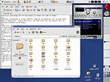

Ревью: Red Hat Linux 9
Paul Pianta. Перевод - SHuRuP, 20.04.2003.
Это
ни в коем случае не техническое ревью - просто обобщение моего опыта,
полученного во время установки и настройки компьютера с Red Hat Linux
9. Я установил стандартную "рабочую станцию" ("workstation") на своем
2-летнем настольном ПК. Дома предпочитаю Gnome, на работе - KDE, но в
данном ревью вы найдете информацию только об установленном по умолчанию
Gnome.
Обратите внимание: В этом ревью строки с пометкой [НН] представляют собой что-либо, не понравившееся автору оригинала статьи.
Установка
 Установки
Red Hat'а становятся скучными до умиления - всегда одно и то же - но
это очень хороший знак. Никаких больше "изучений установочного
процесса" ("learning the installation procedure") - здесь есть все, и
оно работает. У меня все прошло гладко, и очевидно, что anaconda
превратилась в очень чистый и зрелый установщик - ура! Установка
обычной рабочей станции в общем занимает около 40-50 минут, и еще 30
минут уходит на установку пакетов. Моя карта ATI Radeon 8500 была
определена как Radeon 8500LE, но кого это волнует, если я выбрал
драйвер 8500 из списка и устройство было отлично настроено (наверное,
это даже и был тот же самый драйвер).
[НН] В разделе настройки X-ов
упущена возможность тестирования X-Window. А это плохо для новичков с
плохим X-конфигом, у которых отсутствие X-ов приравнивается к
отсутствию Linux'а вообще!
Настройка панели
Я всегда устанавливаю размер моей панели как "большой" ("large") и
ставлю ее вертикально направо. Вот несколько минусов у gnome-панели:
[НН] Дата на апплете с часами выходит за экран из-за того, что панель не достаточно широка.
[НН] Апплет переключения рабочих пространств не запоминает названия после logout'а.
[НН] Меню быстрого доступа должно быть включено в качестве апплета панели по умолчанию.
[НН] Фон у апплета notification-area должен быть прозрачным.
[НН] Когда панель заполнена, не остается свободного места для клика правой кнопкой мышки, чтобы вызвать главное меню панели.
Перерыв в конфигурации
Когда я собрался заняться конфигурацией, заметил, что начал работу
awk, занимая 75-90% процессора, - не знаю, почему - а мне всегда
казалось, что должно быть какое-то новое заменение updatedb, но через
несколько минут updatedb сам остановился, затем опять на несколько
минут запустился awk, после чего все вернулось в нормальное состояние -
просто какая-то домоводческая система, думаю я...
Тема
Я был приятно удивлен обновлением bluecurve темы. Она теперь
отлично отполирована и представляет собой зрелое произведение со
множеством милых деталей и красивых загрузочных иконок. Найти тему
достаточно приятную так же сложно, как и достаточно удобную - bluecurve
выглядит очень симпатично и является хорошим компромиссом.
Курсоры
Невероятно, какое разнообразие могут создать курсоры. Эти курсоры
останутся со мною до конца жизни - только посмотрите на них! Моя жена
не использует Linux, потому что указателем на ссылку в Mozillа обычно
является уродливая рука - так прощай уродливая рука - привет красивой
руке!! Времена меняются - настала пора нанести ответный удар. Я уже не
говорю о песочных часах - но нет, пожалуй, все же скажу: время ожидания
загрузки программы становится существенно меньше, когда любуешься таким
детализированным чудом.
RPM менеджер/(обновление/удаление программ)
После того, как установка выбранной "рабочей станции" завершилась,
я решил поставить новые пакеты после перезагрузки. Индивидуальное
управление пакетами в Red Hat 9 очень простое, благодаря тому, что все
они хорошо разбиты на группы, а поиск по ним удобен (в каждой группе не
так много приложений). Хотя раньше это не было сильной стороной ни
восьмого Red Hat'а, ни последующих beta-версий. Стало интересным, есть
ли здесь какие-либо ошибки и недоработки, поэтому решил немного
протестировать. Во время обновления пакетов, которые я хотел установить
(kde и т.п.), и одновременного удаления других, продолжал настройку
своей системы - никаких проблем не встретил! Конечно, заметил небольшие
подтормаживания из-за такой нагрузки - но что вы хотели от P III-733 с
256 мб оперативной памяти? Тем не менее, ничего не "упало" и не глючило
- я был впечатлен.
Настройка "start here icon"
Быстрый запуск конфигурации "start here icon" поможет вам настроить
внешний вид в соответствии со своим вкусом, покончить с большей частью
общей настройки вообще. Должен заметить, что было приятно за 25 минут
получить великолепный рабочий стол. Единственную сложность вызвали эти
"странные и загадочные иконки Red Hat'а" ("strange and mysterious Red
Hat icons"), что представляют собой папку, в которой они находятся (да,
это так: можно кликнуть на иконку таким образом, что мы попадем в
папку, где уже находимся!! - но в некоторых случаях я до сих кликую по
ним??). Должно быть, не так просто Red Hat'у удалить эти иконки, потому
что они были и выдавали сообщения об ошибках еще в beta-релизах даже до
Red Hat 8.
Gedit
Gedit
использовался для написания этого ревью, он очень красивый и в то же
время модный, благодаря новым иконкам. Новой и полезной деталью
является история файлов в меню (не уверен, что это такое уж новшество:
еще в gedit 0.9.6, использовавшемся для перевода данной статьи, история
файлов присутствовала - прим. SHuRuP'а). Мне действительно очень
нравится этот скромный редактор (хотя подсветка синтаксиса не помешала
бы).
XMMS
Отправился на www.xmms.org
и скачал mp3 plugin для xmms, кликнул дважды на иконке пакета в
nautilus'е, указал пароль root'а, кликнул на "ok" - вот и вся
установка. Работает превосходно (но все равно лучше использовать .ogg).
Настройка принтера
CUPS теперь является демоном печати по умолчанию в Red Hat 9, и
установка моего принтера не могла быть проще. Я включил его, нажал на
иконку принтера в панели, несколько раз кликнул на "ok", и мой Epson
Stylus Color 740 был готов к работе. Потрясающе!
OpenOffice
OpenOffice поставил рекорд по времени загрузки, заняв 45 секунд для
подготовки к своей первой работе, но дальнейшие его запуски в этой
сессии не продолжались более 5 секунд!!! (после перезагрузки - 15
секунд). Шрифт в меню радует глаз (что стало значительным улучшением),
но мои недавно добавленные truetype шрифты найдены не были, хотя я
знаю, что где-то на сайте OO есть документация, которая в состоянии мне помочь.
Mozilla
Тут и говорить нечего - mozilla есть mozilla - великолепное
отображение шрифтов и страниц, поражающая стабильность, и теперь на
windows-машине с IE мне редко напоминают о том, что web заполнен pop-up
рекламой. Огромное вам спасибо, разработчики mozilla, за предоставление
нам полной свободы - а tabbed browsing превращает каждый день
путешествий по интернету в сказку.
Другие открытия/мысли/подсказки
Разговоры о нынешней простоте установки truetype шрифтов - не
безосновательная реклама Red Hat'а. Вам просто необходимо создать
каталог .fonts в своей домашней директории и загрузить туда все шрифты
(или ссылки на них).
Создание дисков с Nautilus'ом - опрятное добавление (ограниченное в
возможностях), но оно делает то, что должно делать - записывает файлы
на диск! Хотя королем в программном обеспечении по записи дисков
остается K3b.
[НН] Жалоба не на Red Hat, а скорее на Gnome - я был разочарован
обнаружить, что file/save диалоги Gnome'а до сих пор скучны и
ограничены в своей функциональности. Но я слышал, что новые должны быть
добавлены в gnome 2.4 (только не надо меня в этом цитировать), так что
еще посмотрим.
Заключение
Red Hat 9 вновь радует свои релизом, и если все так будет
продолжаться, Red Hat останется моим основным стабильным дистрибутивом,
а другие могут приходить и уходить (по крайней мере, пока сохраняется
бешеная периодичность релизов в 6 месяцев). Работа и игра в столь
привлекательном и супер функциональном окружении доставляет только
восхищение и удовольствие. Факт, что все это linux, бесплатное
программное обеспечение и все так прекрасно работает, наполняет меня
гордостью - гордостью за всех, кто помогает open-source проектам.
|
|
Источник - LinuxBegin.ru
http://linuxbegin.ru
Адрес этой статьи:
http://linuxshop.ru/linuxbegin/article278.html
|